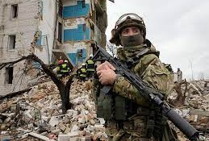
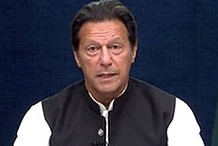
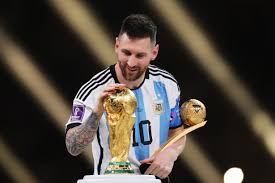
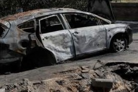

Oleksiy Danilov interview: Ukraine counter-offensive 'ready to begin'
Ukraine is ready to launch its long-expected counter-offensive against Russian forces, one of the country's most senior security officials has told the BBC.He warned that Ukraine's government had "no right to make a mistake" on the decision because this was an "historic opportunity" that "we cannot lose".
As secretary of the National Security and Defence Council of Ukraine, Mr Danilov is at the heart of President Volodymyr Zelensky's de facto war cabinet.
His rare interview with the BBC was interrupted by a phone message from President Zelensky summoning him to a meeting to discuss the counter-offensive. Russian forces, one of the country's most senior security officials has told the BBC.He warned that Ukraine's government had "no right to make a mistake" on the decision because this was an "historic opportunity" that "we cannot lose". As secretary of the National Security and Defence Council of Ukraine, Mr Danilov is at the heart of President Volodymyr Zelensky's de facto war cabinet.
His rare interview with the BBC was interrupted by a phone message from President Zelensky summoning him to a meeting to discuss the counter-offensive. Russian forces, one of the country's most senior security officials has told the BBC.He warned that Ukraine's government had "no right to make a

The end of the affair: How Imran Khan went from the Pakistan Armys saviour to its nemesis
As Imran Khan and his party face a country-wide crackdown, Pakistan seems to have come to a standstill.
The nation is facing crippling inflation and the hottest summer in history, with constant power breakdowns, and yet the whole country is consumed with what Khan will do next, and what our military establishment can do to contain him.
After he was removed from power more than a year ago, his supporters said Khan was their "red line" and that if he was arrested, the country would burn. After a number of failed attempts, a contingent of paramilitary forces did just that on 9 May.
The country didn't quite burn, but Khan's supporters took the fight to military cantonments.he nation is facing crippling inflation and the hottest summer in history, with constant power breakdowns, and yet the whole country is consumed with what Khan will do next, and what our military establishment can do to contain him.After he was removed from power more than a year ago, his supporters said Khan was their "red line" and that if he was arrested, the country would burn. After a number of failed attempts, a contingent of paramilitary forces did just that on 9 May.
The country didn't quite burn, but Khan's supporters took the fight to military cantonments.he nation is facing crippling inflation and the hottest summer in history, with constant power breakdowns, and yet the whole country is consumed with what Khan will do next, and what our military establishment can do to contain him.

Lionel Messi: Destiny - new documentary goes inside Argentina's World Cup win
Argentina went into the tournament as one of the favourites, and on the back of a 36-game unbeaten run.
But their confidence was rocked as they lost their opening Group C game 2-1 to Saudi Arabia in one of the biggest World Cup shocks of all time.
"It was the hardest night of my life - I couldn't sleep," recalls goalkeeper Martinez. "I was afraid of getting knocked out of my first World Cup."
The Aston Villa player, 30, compares the game to a boxing match in which one person gets knocked out. "We couldn't fight back," he says.
Mac Allister played 'like he was in his back garden'
Brighton midfielder Mac Allister was one of the surprise stars in Qatar - and topped the BBC Sport player rater as Argentina beat France on penalties in the final.
The 24-year-old flourished alongside Messi, Enzo Fernandez and Angel di Maria.But their confidence was rocked as they lost their opening Group C game 2-1 to Saudi Arabia in one of the biggest World Cup shocks of all time.
"It was the hardest night of my life - I couldn't sleep," recalls goalkeeper Martinez. "I was afraid of getting knocked out of my first World Cup."
The Aston Villa player, 30, compares the game to a boxing match in which one person gets knocked out. "We couldn't fight back," he says.
.jpg)
Moscow attack 'response' to Ukrainian intelligence HQ strike - Putin
Ukraine is ready to launch its long-expected counter-offensive against Russian forces, one of the country's most senior security officials has told the BBC.He warned that Ukraine's government had "no right to make a mistake" on the decision because this was an "historic opportunity" that "we cannot lose".
As secretary of the National Security and Defence Council of Ukraine, Mr Danilov is at the heart of President Volodymyr Zelensky's de facto war cabinet.
His rare interview with the BBC was interrupted by a phone message from President Zelensky summoning him to a meeting to discuss the counter-offensive.Mac Allister played 'like he was in his back garden' Brighton midfielder Mac Allister was one of the surprise stars in Qatar - and topped the BBC Sport player rater as Argentina beat France on penalties in the final. The 24-year-old flourished alongside Messi, Enzo Fernandez and Angel di Maria. His rare interview with the BBC was interrupted by a phone message from President Zelensky summoning him to a meeting to discuss the counter-offensive.Mac Allister played 'like he was in his back garden' Brighton midfielder Mac Allister was one of the surprise stars in Qatar - and topped the BBC Sport player rater as Argentina beat France on penalties in the final. The 24-year-old flourished alongside Messi, Enzo Fernandez and Angel di Maria.

West supports genocide by backing Zelensky - Lavrov
Russia's Foreign Minister Sergei Lavrov has spoken in the last few minutes, though not about the drone attack in Moscow.
Instead, during a trip to East Africa, Lavrov accused Western leaders of "directly supporting genocide" by backing Ukrainian President Volodymyr Zelensky's peace plan, the Reuters news agency reported.
It seems Lavrov is referring to the 10-point peace plan Zelensky published at the end of last year. It called for - among other things - the restoration of Ukraines state borders with Russia and the release of all war prisoners and children deported to Russia since the war began.
Addressing a press conference, Lavrov said the plan hoped to "destroy everything Russian" in east Ukraine and Crimea. He offered no evidence to support his claims.It seems Lavrov is referring to the 10-point peace plan Zelensky published at the end of last year. It called for - among other things - the restoration of Ukraines state borders with Russia and the release of all war prisoners and children deported to Russia since the war began.
Addressing a press conference, Lavrov said the plan hoped to "destroy everything Russian" in east Ukraine and Crimea. He offered no evidence to support his claims.
Ukraine has reason to deny responsibility for attack - security expert
We are still waiting for more details to emerge about the drone attack in Moscow, which Russia has blamed on Ukraine. Kyiv denies being behind the attack, which took place early on Tuesday morning.
Russian security expert Natia Seskuria, from the Royal United Services Institute think tank, said Ukraine will not want to admit carrying out the attack if Western weapons are involved. Kyiv has promised the West it would not use Western weapons on Russian soil.
She said: "We don't have the full picture at the moment. But at the same time we know Ukraine has pledged to the West it will not use their weapons on Russian territory.
"So long as the West remains united, Ukraine will remain committed to this.
Mac Allister played 'like he was in his back garden'
Brighton midfielder Mac Allister was one of the surprise stars in Qatar - and topped the BBC Sport player rater as Argentina beat France on penalties in the final.
The 24-year-old flourished alongside Messi, Enzo Fernandez and Angel di Maria. She said: "We don't have the full picture at the moment. But at the same time we know Ukraine has pledged to the West it will not use their weapons on Russian territory.
"So long as the West remains united, Ukraine will remain committed to this.
Mac Allister played 'like he was in his back garden'
Brighton midfielder Mac Allister was one of the surprise stars in Qatar - and topped the BBC Sport player rater as Argentina beat France on penalties in the final.